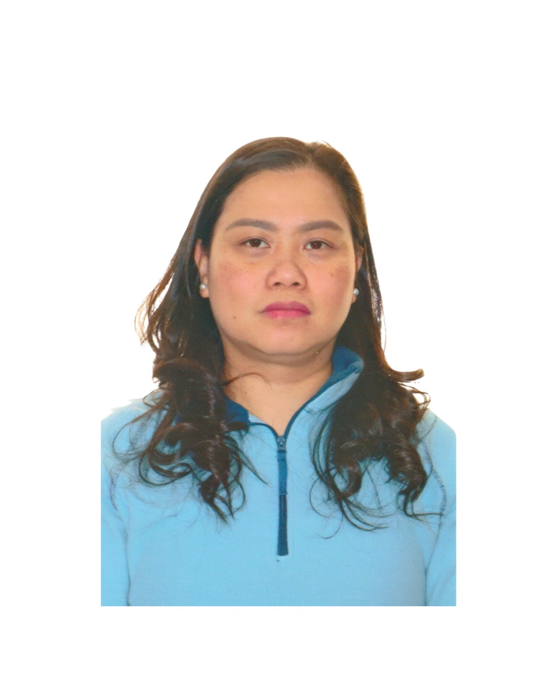

Empathic professional with over 10 years of experience providing holistic patient care. Dedicated to safety, dignity, and excellence in the healthcare field.
Assisting with daily activities, hygiene, and dressing while ensuring maximum patient dignity and comfort.
Extensive experience in documentation, monitoring vital signs, and performing duties under safety protocols.
Strong communication skills to develop meaningful rapport with patients and their families for better care outcomes.
Comprehensive knowledge in infection prevention and control (IPAC) to maintain a safe healthcare environment.
Bachelors of Science in Nursing (2006)
Arellano University, Philippines
Professional Licenses:
• Philippine Licensure: Registered Nurse (License #0421470)
• Education Accredited by College of Nurses in Ontario (CNO)
• Member: Integrated Filipino Canadian Nurses Association (IFCNA)
I am currently available for PSW and healthcare roles in Woodbridge, Vaughan, and the Greater Toronto Area.